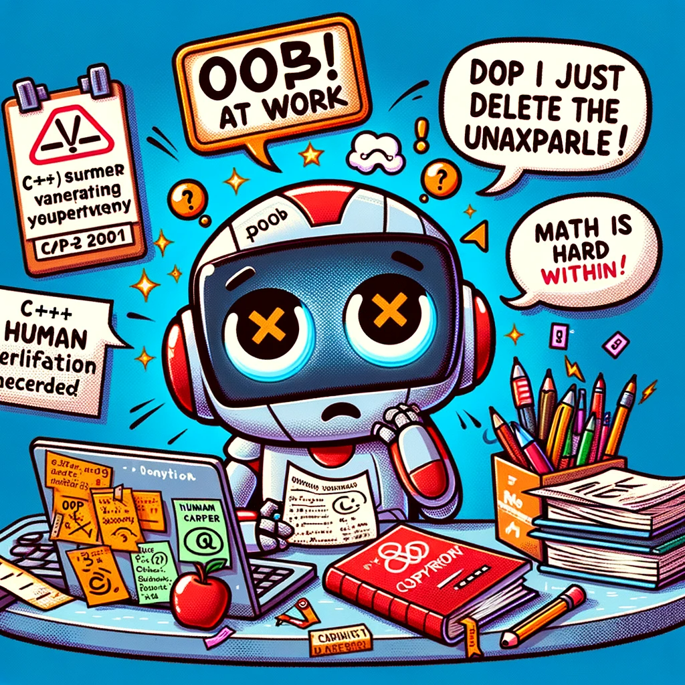

One of the exams had the format “there is a realistic case study,
you need to describe the actions necessary to solve it.”
We had only two samples from the teacher: 2 situations and 2 expected answers to them.
So we added the theory from the slides of all the lectures into the GPT,
followed it with exam samples and asked it to generate similar tasks and answers to them based on the received theory.
Super fast preparation for this kind of exam))
Developing Critical Thinking
in the Era of ChatGPT
by
Alex Avdiushenko
aleksandr.avdiushenko@jetbrains.comTo make long story short
Oral Tradition
(circa 100,000 BCE - 3,200 BCE)


Birth of Writing and Numeracy
(circa 3,200 BCE)

Scrolls and Libraries
(circa 1200 BCE — 15th Century CE)


The Great Library of Alexandria in Egypt
ALEXANDRINA BYBLIOTHECE

The Printing Press
(1440 CE)
Electricity and Telecommunication
(19th century)

Postal delivery time from London in 1850
days
to reach
12
New Yourk
13
Alexandria, Egypt
19
Istanbul, Turkey
33
Mumbai, India
45
Singapore
57
Shanghai, China
73
Sydney, Australia

Digital Age and the Internet
(late 20th century)
Artificial Intelligence and ChatGPT
(21st century)

Information is extremely accessible!
The Influence of ChatGPT in Education
Chegg Inc — an NYSE-listed company focused on improving learning and learning outcomes for students

Student's view on AI assistance


The process of completing practical homework with writing code has now changed:
ChatGPT writes basic, often broken, code, which I take as the basis for further execution of the task.
In the further process of execution, Yaroslav uses it as a bug fixer — it is not always easy to understand what the error is. So you can throw the code into it and ask to find and fix the error.
In the further process of execution, Yaroslav uses it as a bug fixer — it is not always easy to understand what the error is. So you can throw the code into it and ask to find and fix the error.
Pros and cons of ChatGPT in studying
Useful cases
- helps answer questions for tools with poor or unreadable documentation
(for example, it can tell you how to start using
GDB) - gives good and quick examples for some JSONs, XMLs with the necessary characteristics, or some fixtures to fill the database
- helps to overcome the fear of a “blank slate”
What it doesn't handle well
- any task where you need to understand deeply the general context of the whole project
- not typical problems in not so popular languages: if you ask to solve a dynamic programming problem in Haskell, it gives funny answers
- for different mathematical facts about 50% of the GPT-generated proofs are incorrect
University teachers
Do you use AI assistant in your everyday practice?
What is wrong with them?

- Intentionally, so as not to accidentally violate copyright
- AI is not reliable yet. If you believe it, damage may occur in almost everything related to information security, protocol development, infrastructure, etc.
- C++ requires human verification =)
- ChatGPT has problems with mathematical proofs
Few observations from Academy
- Incredible speeds: any new knowledge is immediately available to everybody
- Yesterday we found out on Twitter $\to$ tomorrow added a new skill to ourselves $\to$ in a week all the students have it
- Therefore solving unsolved problems is the key skill
Essential activities for critical thinking development are
Mathematical proofs
Debugging
System engineering
Human discussion
AI-powered cases from teachers
- Checking how easily an assignment task can be answered with the help of LLM
- DALL-E 3 draws beautiful high-quality illustrations, in pencil or in vector formats
- Send all routine tasks in a broad sense to the ChatGPT (for example, writing syllabus draft)